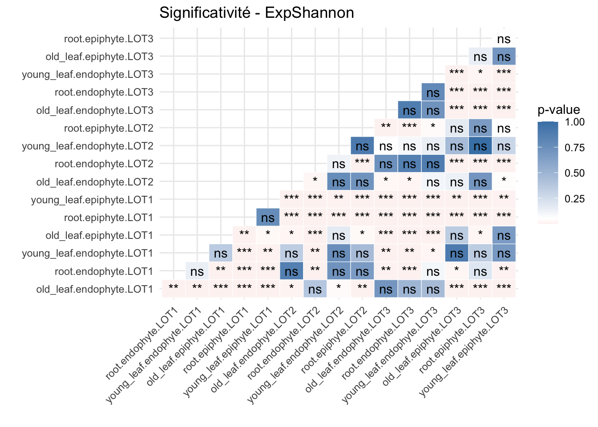
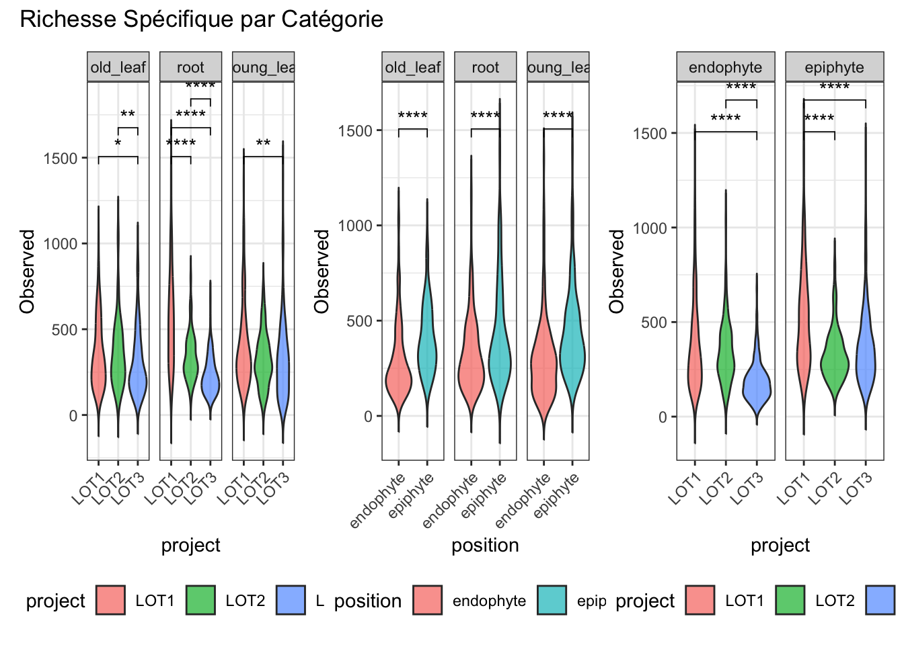
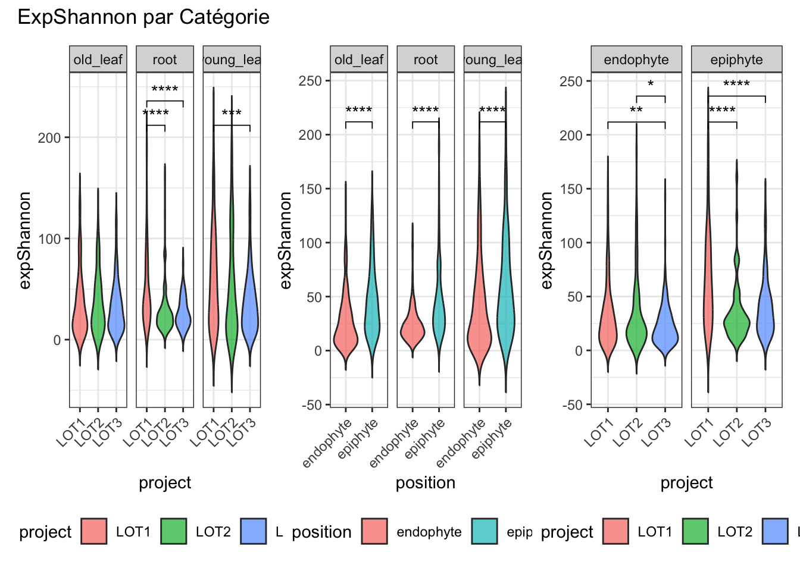
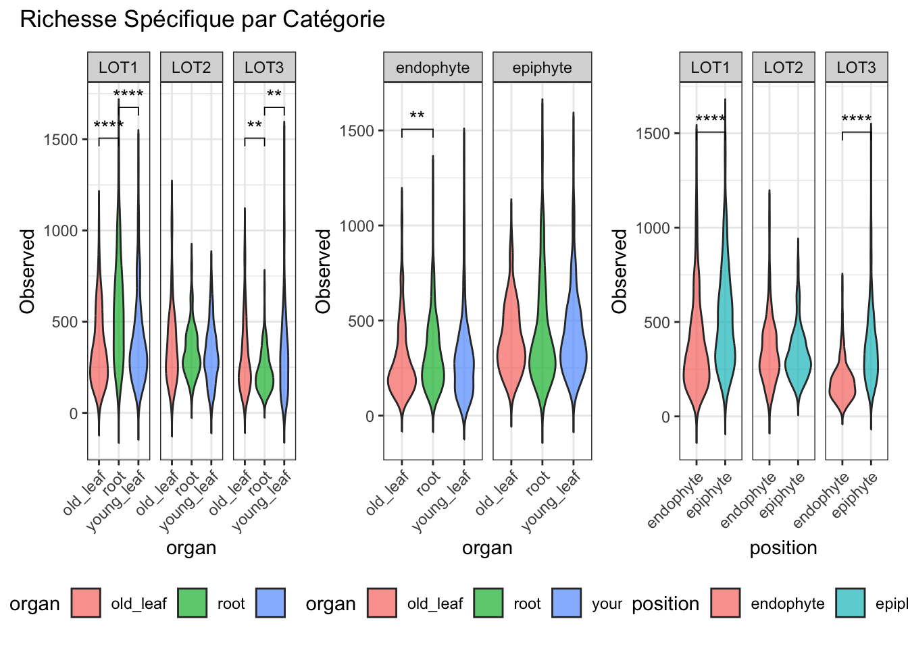
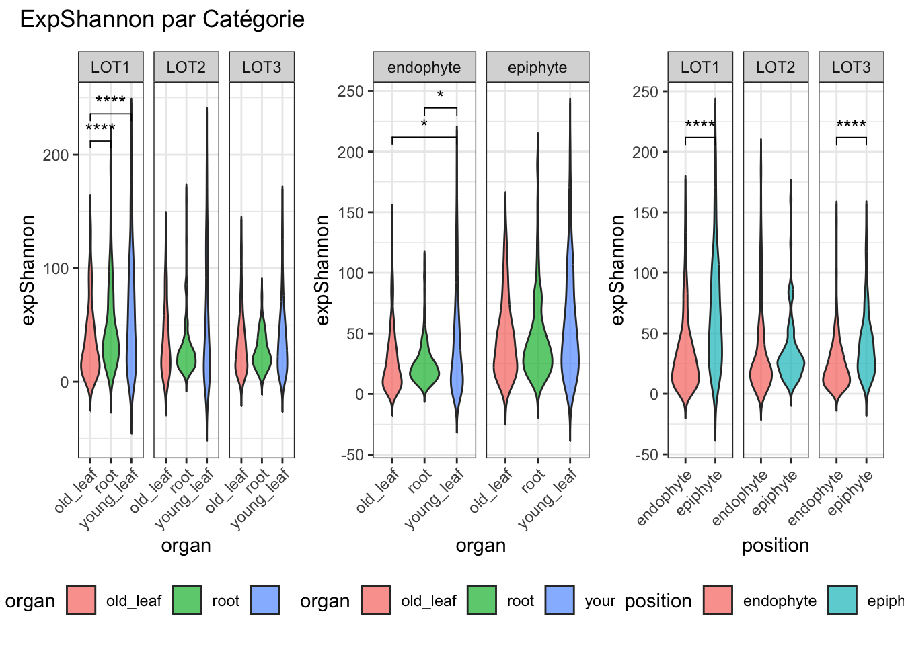
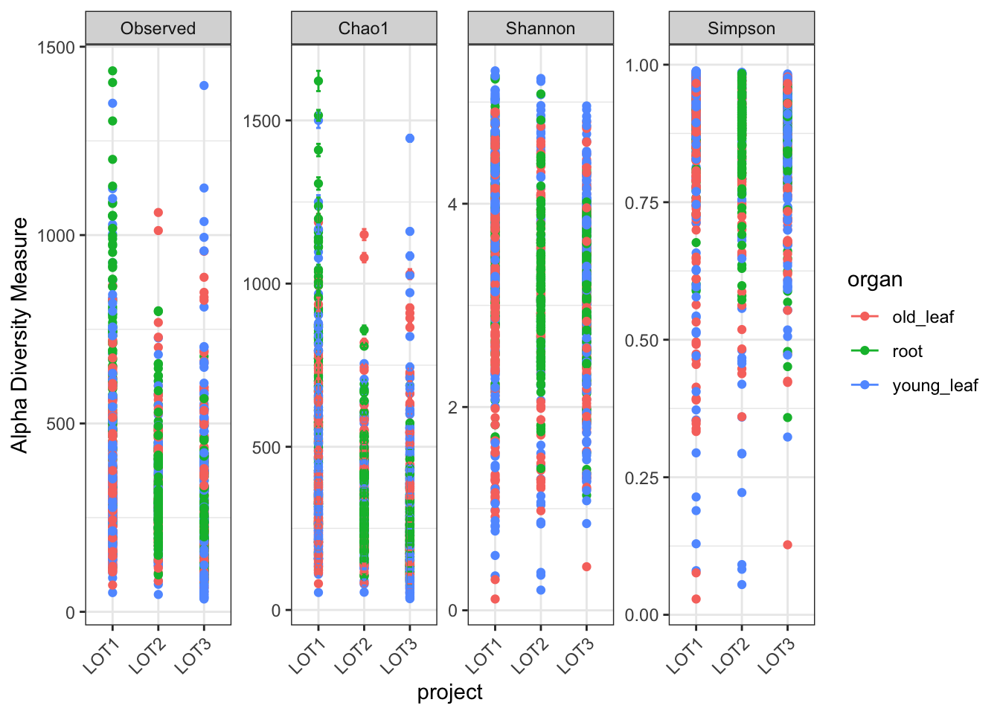
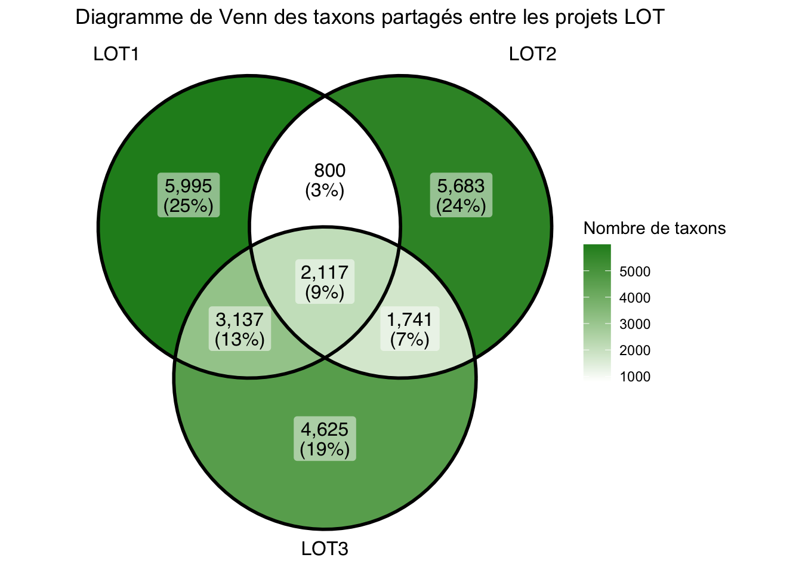
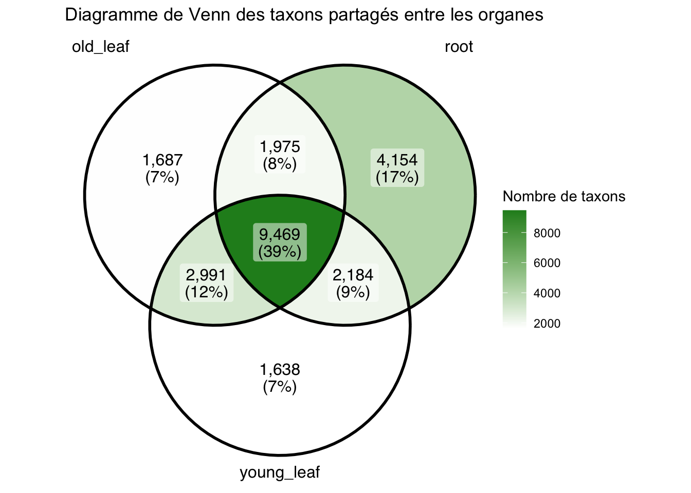
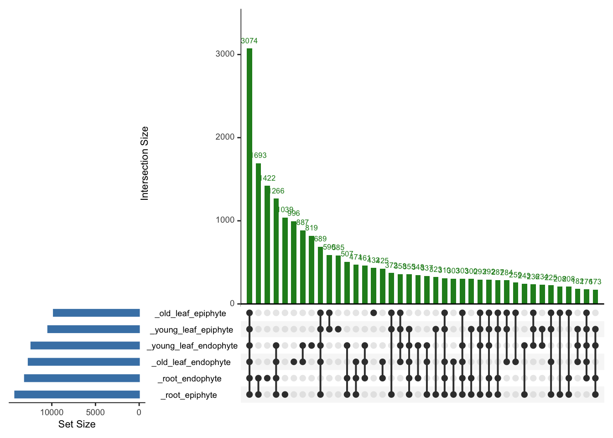
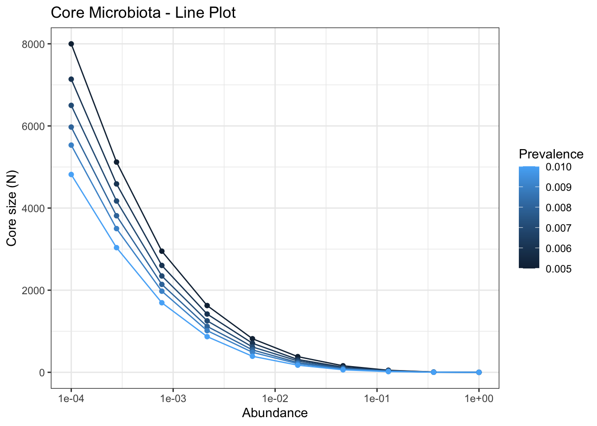

Code
library(phyloseq)
library(ggplot2)
library(ggpubr)
library(patchwork)
ps <- readRDS("donnees_nettoyees.rds")
sample_names(ps) <- gsub("\\.", "-", sub("^X", "", sample_names(ps)))Les forêts tropicales abritent une exceptionnelle biodiversité végétale et microbienne, qui joue un rôle crucial dans le fonctionnement des écosystèmes et les cycles biogéochimiques. Parmi cette diversité, les plantes épiphytes vasculaires constituent une composante essentielle de la canopée tropicale, contribuant à la rétention d’eau, au recyclage des nutriments et à la structuration des communautés associées. Cependant, la diversité et le rôle des communautés microbiennes, et en particulier fongiques, associées aux épiphytes restent encore largement méconnus. Comprendre la composition et l’assemblage de ces communautés représente donc un enjeu de premier plan pour mieux appréhender les interactions plante- microorganismes en canopée et leurs implications écologiques dans le fonctionnement des forêts tropicales.
Dans quelle mesure le filtrage environnemental à l’échelle du micro-habitat (type d’organe et profondeur tissulaire) dicte-t-il l’assemblage des communautés fongiques chez les épiphytes vasculaires tropicaux, comparativement à l’identité de la plante hôte et au contexte biogéographique ?
L’objectif est d’explorer la composition et l’assemblage des communautés fongiques chez les plantes épiphytes vasculaires. Plus spécifiquement, l’étude porte sur les racines et les feuilles, en distinguant la surface et l’intérieur des tissus. Nous anticipons que les communautés fongiques différeront selon les groupes taxonomiques d’épiphytes. Nous faisons également l’hypothèse que les racines et les feuilles hébergeront des communautés distinctes, reflétant les stratégies fonctionnelles déployées par ces plantes pour acquérir l’eau et les nutriments. Enfin, nous supposons que les communautés fongiques varieront entre les tissus internes et les surfaces, en raison des contrastes marqués entre ces deux environnements.
Pour répondre à cet objectif, différentes espèces de plantes épiphytes vasculaires ont été échantillonnées au Pérou et en Colombie dans le cadre du programme ‘Life on Trees’. Sur chaque individu, une jeune feuille, une feuille âgée et des racines ont été récoltées. Les microorganismes présents en surface ont d’abord été collectés à l’aide de bandes de coton imbibées de CTAB, puis les microorganismes présents à l’intérieur des tissus ont été obtenus après stérilisation de surface des organes. Les communautés fongiques ont été caractérisées par une approche de métabarcoding haut débit ciblant la région ITS, marqueur de référence pour l’étude de la diversité fongique. Les produits PCR ont été séquencés en Illumina MiSeq. Après traitement bioinformatique une table de contingence des séquences par échantillon a été produite. L’analyse de ces données sera réalisée au cours du stage afin de répondre aux différentes hypothèses. Dans un premier temps, la diversité alpha sera caractérisée en utilisant différents indices de biodiversité (richesse spécifique, Shannon, Simpson, etc.), afin d’évaluer les patrons de diversité en fonction des groupes taxonomiques d’épiphytes et des micro-habitats (feuilles vs. racines, surface vs. intérieur). Dans un second temps, la diversité bêta sera explorée par le calcul de distances de dissimilarité (ex. Bray-Curtis, Jaccard) et par des méthodes d’ordination (NMDS, PCoA) permettant de visualiser la structuration des communautés fongiques selon (1) la taxonomie des épiphytes vasculaires, (2) le type d’organe, et (3) le compartiment (surface vs tissus internes). Ces analyses seront complétées par des tests statistiques multivariés (PERMANOVA) afin de tester la significativité des facteurs discriminants. Enfin, des approches complémentaires pourront être envisagées, telles que l’identification des taxons indicateurs ou l’inférence de réseaux de co-occurrence pour explorer les interactions potentielles entre groupes fongiques.
Avant de se lancer dans les analyses de diversité alpha et bêta, il est important de faire un état des lieux des données disponibles. Nous allons d’abord charger les données et faire un nettoyage préliminaire pour s’assurer que nous avons les bonnes variables à notre disposition pour les analyses.
Ensuite nous allons réaliser les analyses de diversité alpha, en utilisant différents indices de biodiversité (richesse spécifique, Shannon, Simpson, etc.), afin d’évaluer les patrons de diversité en fonction des groupes taxonomiques d’épiphytes et des micro-habitats (feuilles vs. racines, surface vs. intérieur).
Puis nous analysons les diversités beta
Premierement, mettre en forme les données pour les analyses de diversité alpha. Les noms d’echantillons sont actuellement sous la forme “X1.2.3” et nous allons les transformer en “1-2-3” pour faciliter les manipulations ultérieures.
library(phyloseq)
library(ggplot2)
library(ggpubr)
library(patchwork)
ps <- readRDS("donnees_nettoyees.rds")
sample_names(ps) <- gsub("\\.", "-", sub("^X", "", sample_names(ps)))Ensuite, on peut calculer les indices de diversité alpha pour chaque échantillon et les ajouter à la table de métadonnées pour faciliter les analyses statistiques et les visualisations. On a choisi de calculer la richesse observée (Observed) et l’indice de Shannon, puis on a transformé l’indice de Shannon en expShannon pour faciliter l’interprétation. On a aussi créé une variable “grp” qui combine les informations d’organe, de position et de projet pour faciliter les comparaisons entre les différentes modalités.
df_alpha <- estimate_richness(ps, measures = c("Observed", "Shannon")) |>
cbind(sample_data(ps)) |>
transform(
expShannon = exp(Shannon),
grp = interaction(organ, position, project)
)Il est ensuite possible de faire des tests statistiques pour évaluer si les différences observées entre les différentes modalités sont significatives. Par exemple, on peut utiliser le test de Kruskal-Wallis pour comparer les indices de diversité alpha entre les différents groupes.
stats_global <- lapply(df_alpha[c("Observed", "expShannon")],
function(x) kruskal.test(x ~ df_alpha$grp)$p.value)
plot_sig_heatmap <- function(df, metric, title) {
pw <- pairwise.wilcox.test(df[[metric]], df$grp, p.adjust.method = "BH")$p.value |>
as.table() |>
as.data.frame() |>
na.omit()
ggplot(pw, aes(Var1, Var2, fill = Freq)) +
geom_tile(color = "white") +
geom_text(aes(label = cut(Freq, c(-Inf, 0.001, 0.01, 0.05, Inf), labels = c("***", "**", "*", "ns")))) +
scale_fill_gradient2(low = "firebrick", mid = "white", high = "steelblue", midpoint = 0.05) +
theme_minimal() +
theme(axis.text.x = element_text(angle = 45, hjust = 1)) +
labs(title = title, x = "", y = "", fill = "p-value")
}
plot_sig_heatmap(df_alpha, "Observed", "Significativité - Observed")
plot_sig_heatmap(df_alpha, "expShannon", "Significativité - ExpShannon")
Nous pouvons également visualiser les différences de diversité alpha entre les différentes modalités à l’aide de graphiques de type violon, en utilisant la fonction ggplot2 et en ajoutant des annotations pour indiquer les significativités des différences entre les groupes.
library(ggplot2)
library(ggpubr)
library(patchwork)
plot_groupes <- function(df, x, y, facet_by) {
ggplot(df, aes(x = .data[[x]], y = .data[[y]], fill = .data[[x]])) +
geom_violin(alpha = 0.7, trim = FALSE) +
geom_pwc(method = "wilcox.test", label = "p.signif", hide.ns = TRUE) +
facet_wrap(vars(.data[[facet_by]])) +
theme_bw() +
theme(axis.text.x = element_text(angle = 45, hjust = 1), legend.position = "bottom")
}
wrap_plots(
plot_groupes(df_alpha, "project", "Observed", "organ"),
plot_groupes(df_alpha, "position", "Observed", "organ"),
plot_groupes(df_alpha, "project", "Observed", "position"),
ncol = 3
) + plot_annotation(title = "Richesse Spécifique par Catégorie")
wrap_plots(
plot_groupes(df_alpha, "project", "expShannon", "organ"),
plot_groupes(df_alpha, "position", "expShannon", "organ"),
plot_groupes(df_alpha, "project", "expShannon", "position"),
ncol = 3
) + plot_annotation(title = "ExpShannon par Catégorie")
wrap_plots(
plot_groupes(df_alpha, "organ", "Observed", "project"),
plot_groupes(df_alpha, "organ", "Observed", "position"),
plot_groupes(df_alpha, "position", "Observed", "project"),
ncol = 3
) + plot_annotation(title = "Richesse Spécifique par Catégorie")
wrap_plots(
plot_groupes(df_alpha, "organ", "expShannon", "project"),
plot_groupes(df_alpha, "organ", "expShannon", "position"),
plot_groupes(df_alpha, "position", "expShannon", "project"),
ncol = 3
) + plot_annotation(title = "ExpShannon par Catégorie")
Même analyse mais en utilisant les fonctions de phyloseq pour calculer la diversité alpha et faire les graphiques
alpha_meas <- c("Observed", "Chao1", "Shannon", "Simpson")
p <- plot_richness(ps, x = "project", measures = alpha_meas, color = "organ")
p + theme_bw() + theme(axis.text.x = element_text(angle = 45, hjust = 1))
On realise un diagramme de Venn pour visualiser les OTUs partagés entre les différents organes et Projets.
library(ggVennDiagram)
meta <- data.frame(sample_data(ps))
samples_by_project <- split(rownames(meta), meta$project)
taxa_by_project <- lapply(samples_by_project, function(samples) {
ps_sub <- prune_samples(samples, ps)
ts <- taxa_sums(ps_sub)
names(ts[ts > 0])
})
ggVennDiagram(taxa_by_project) +
scale_fill_gradient(low = "white", high = "forestgreen") +
labs(title = "Diagramme de Venn des taxons partagés entre les projets LOT",
fill = "Nombre de taxons") 
samples_by_organ <- split(rownames(meta), meta$organ)
taxa_by_organ <- lapply(samples_by_organ, function(samples) {
ps_sub <- prune_samples(samples, ps)
ts <- taxa_sums(ps_sub)
names(ts[ts > 0])
})
ggVennDiagram(taxa_by_organ) +
scale_fill_gradient(low = "white", high = "forestgreen") +
labs(title = "Diagramme de Venn des taxons partagés entre les organes",
fill = "Nombre de taxons")
Etant donné qu’avec une nombre de modalités superieur à 3, les diagrammes de Venn deviennent difficiles à interpréter, on peut aussi faire des diagrammes d’UpSet pour visualiser les intersections entre les différentes catégories d’échantillons (par exemple, en fonction de l’organe, de la position et du projet).
# Catégories: old_leaf endophyte, old_root endophyte, young_leaf endophyte, young_root endophyte, old_leaf epiphyte, old_root epiphyte, young_leaf epiphyte, young_root epiphyte
library(UpSetR)
meta <- data.frame(sample_data(ps))
meta$category <- paste(meta$age, meta$organ, meta$position, sep = "_")
taxa_list <- split(rownames(meta), meta$category) |>
lapply(function(samples) {
taxa_sums <- taxa_sums(prune_samples(samples, ps))
names(taxa_sums[taxa_sums > 0])
})
upset(fromList(taxa_list), nsets = length(taxa_list), order.by = "freq",
main.bar.color = "forestgreen", sets.bar.color = "steelblue")
Il est aussi possible de faire des diagrammes en corde pour visualiser les associations entre les OTUs et les différentes catégories d’échantillons (par exemple, en fonction de l’organe, de la position et du projet).
#| label: chord-diagram
library(circlize)
categories <- names(taxa_list)
shared_mx <- matrix(0, nrow = length(categories), ncol = length(categories),
dimnames = list(categories, categories))
for (i in seq_along(categories)) {
for (j in seq_along(categories)) {
if (i != j) {
shared_mx[i, j] <- length(intersect(taxa_list[[i]], taxa_list[[j]]))
}
}
}
chordDiagram(shared_mx, transparency = 0.3, annotationTrack = c("name", "grid"))
library(dplyr)
library(circlize)
ps_rel <- transform_sample_counts(ps, function(x) x / sum(x))
ps_phylum <- tax_glom(ps_rel, taxrank = "gbr268_Phylum", NArm = FALSE)
df_phylum <- psmelt(ps_phylum)
df_chord <- df_phylum %>%
mutate(organ_position = paste(organ, position, sep = "_")) %>%
group_by(organ_position, gbr268_Phylum) %>%
summarise(Abundance = sum(Abundance), .groups = "drop") %>%
filter(Abundance > 0.02) %>%
na.omit()
circos.clear()
chordDiagram(df_chord, transparency = 0.3, annotationTrack = c("name", "grid"))
ps_rel <- transform_sample_counts(ps, function(x) x / sum(x))
ps_class<- tax_glom(ps_rel, taxrank = "gbr268_Class", NArm = FALSE)
df_class <- psmelt(ps_class)
df_chord <- df_class %>%
mutate(organ_position = paste(organ, position, sep = "_")) %>%
group_by(organ_position, gbr268_Class) %>%
summarise(Abundance = sum(Abundance), .groups = "drop") %>%
filter(Abundance > 0.02) %>%
na.omit()
circos.clear()
chordDiagram(df_chord, transparency = 0.3, annotationTrack = c("name", "grid"))
On commence par calculer les distances de dissimilarité entre les échantillons en utilisant différentes métriques, telles que la distance de Bray-Curtis et la distance de Jaccard. Ces distances nous permettront d’évaluer les différences de composition des communautés fongiques entre les différents groupes d’échantillons (par exemple, en fonction de l’organe, de la position et du projet).
library(vegan)
otu_table <- as(otu_table(ps), "matrix")
bray_dist <- vegdist(otu_table, method = "bray")
jaccard_dist <- vegdist(otu_table > 0, method = "jaccard")Desormais, on peut utiliser les distances de dissimilarité calculées pour réaliser des ordinations, telles que le NMDS (Non-metric Multidimensional Scaling) ou le PCoA (Principal Coordinates Analysis), afin de visualiser la structuration des communautés fongiques selon les différents facteurs (1) la taxonomie des épiphytes vasculaires, (2) le type d’organe, et (3) le compartiment (surface vs tissus internes). Ces ordinations nous permettront d’identifier les regroupements d’échantillons en fonction de ces facteurs et d’évaluer l’influence relative de chacun d’eux sur la composition des communautés fongiques.
#| label: ordination-nmds-globales
ps_hellinger <- transform_sample_counts(ps, function(x) sqrt(x / sum(x)))
nmds_bray <- ordinate(ps_hellinger, method = "NMDS", distance = "bray")Run 0 stress 0.2165225
Run 1 stress 0.2322933
Run 2 stress 0.228538
Run 3 stress 0.2276579
Run 4 stress 0.2210018
Run 5 stress 0.2279614
Run 6 stress 0.2340064
Run 7 stress 0.2257106
Run 8 stress 0.2427321
Run 9 stress 0.2283916
Run 10 stress 0.2306698
Run 11 stress 0.2197179
Run 12 stress 0.2297072
Run 13 stress 0.228344
Run 14 stress 0.2255319
Run 15 stress 0.2302784
Run 16 stress 0.2354497
Run 17 stress 0.2296535
Run 18 stress 0.2314806
Run 19 stress 0.2316195
Run 20 stress 0.2309182
*** Best solution was not repeated -- monoMDS stopping criteria:
1: no. of iterations >= maxit
1: stress ratio > sratmax
18: scale factor of the gradient < sfgrminplot_ordination(ps_hellinger, nmds_bray, color = "organ", shape = "position") +
geom_point(size = 3, alpha = 0.8) +
theme_bw() +
labs(title = "NMDS - Bray-Curtis (Hellinger)")
plot_ordination(ps_hellinger, nmds_bray, color = "organ", shape = "project") +
geom_point(size = 3, alpha = 0.8) +
theme_bw() +
labs(title = "NMDS - Bray-Curtis")
plot_ordination(ps_hellinger, nmds_bray, color = "project", shape = "organ") +
geom_point(size = 3, alpha = 0.8) +
theme_bw() +
labs(title = "NMDS - Bray-Curtis")
plot_ordination(ps_hellinger, nmds_bray, color = "plant_family", shape = "project") +
geom_point(size = 3, alpha = 0.8) +
theme_bw() +
labs(title = "NMDS - Bray-Curtis")
Il est interessant de visualiser les abondances relatives des principales classes fongiques (> 2%) par zone (organe x position) pour voir s’il y a des patrons de distribution particuliers en fonction de ces micro-habitats. On peut faire cela en utilisant la fonction ggplot2 pour créer des graphiques à barres empilées, en utilisant les données agrégées au niveau de la classe fongique et en les facettant par organ_position.
#| label: abondance-relative-classes-par-lot-organes
library(dplyr)
library(phyloseq)
library(ggplot2)
ps_rel <- transform_sample_counts(ps, function(x) x / sum(x))
ps_class <- tax_glom(ps_rel, taxrank = "gbr268_Class", NArm = FALSE)
ps_class_filtered <- filter_taxa(ps_class, function(x) mean(x) > 0.02, TRUE)
# Conversion de l'objet phyloseq en data.frame
df_class <- psmelt(ps_class_filtered)
df_class$organ_position <- interaction(df_class$organ, df_class$position, sep = " - ")
ggplot(df_class, aes(x = Sample, y = Abundance, fill = gbr268_Class)) +
geom_bar(stat = "identity", position = "fill", color = NA) +
facet_wrap(~ organ_position, scales = "free_x", ncol = 3) +
theme_bw() +
labs(title = "Abondances relatives des principales classes fongiques (> 2%) par zone",
x = "Échantillons ",
y = "Abondance relative",
fill = "Classe fongique") +
theme(legend.position = "bottom",
axis.text.x = element_blank(),
axis.ticks.x = element_blank())
ggplot(df_class, aes(x = project, y = Abundance, fill = gbr268_Class)) +
geom_bar(stat = "identity", position = "fill", color = NA) +
facet_wrap(~ organ_position, scales = "free_x", ncol = 3) +
theme_bw() +
labs(title = "Abondances relatives des principales classes fongiques (> 2%) par zone",
x = "Échantillons ",
y = "Abondance relative",
fill = "Classe fongique") +
theme(legend.position = "bottom",
axis.text.x = element_blank(),
axis.ticks.x = element_blank())
Les espèces indicatrices sont des taxons qui sont fortement associés à une condition ou un groupe particulier. Identifier les espèces indicatrices peut nous aider à comprendre quelles espèces sont les plus caractéristiques de chaque groupe d’échantillons (par exemple, en fonction de l’organe, de la position et du projet) et à identifier des taxons potentiellement importants pour les interactions plante-microorganisme dans ces micro-habitats.
#| label: indicators-species-microbiota
library(indicspecies)
library(phyloseq)
metadata <- data.frame(sample_data(ps))
groups <- metadata$project
indicator_taxa <- multipatt(otu_table, groups, func = "IndVal.g", control = how(nperm = 99))
summary(indicator_taxa)
library(microbiome)
library(ggplot2)
library(RColorBrewer)
# Transformer les données en abondance relative (compositional)
ps_rel <- transform(ps, "compositional")
# Définir les seuils de détection et de prévalence
detections <- 10^seq(log10(1e-4), log10(1), length = 10)
prevalences <- seq(0.5, 1, 0.1)
# Core Heatmap
p_core_heatmap <- plot_core(ps_rel,
plot.type = "heatmap",
colours = rev(brewer.pal(5, "Spectral")),
prevalences = prevalences,
detections = detections,
min.prevalence = 0.5) +
labs(title = "Core Microbiota - Heatmap") +
theme_bw()
print(p_core_heatmap)
# Core Lines Plot
p_core_lines <- plot_core(ps_rel,
plot.type = "lineplot",
prevalences = prevalences,
detections = detections) +
labs(title = "Core Microbiota - Line Plot") +
theme_bw()
print(p_core_lines)
Utilisation du paquet igraph pour construire un réseau de co-occurrence entre les taxons fongiques, en utilisant les données de la table d’abondance. On peut ensuite visualiser ce réseau pour identifier les associations potentielles entre les différents taxons et voir s’il y a des regroupements particuliers en fonction des catégories d’échantillons (par exemple, en fonction de l’organe, de la position et du projet).
#| label: cooccurrence-network
library(igraph)
top_taxa <- names(sort(taxa_sums(ps), decreasing = TRUE))[1:200]
ps_sub <- prune_taxa(top_taxa, ps)
ig <- make_network(ps_sub, type = "taxa", max.dist = 0.9)
plot_network(ig, ps_sub, type = "taxa",color="gbr268_Class", label = NULL) +
theme_minimal() +
labs(title = "Réseau de co-occurrence (Top 200 taxons)",
color = "Class")